📖 답례품 주문관리 시스템 매뉴얼
1. 시스템 개요
이 시스템은 모든 판매 채널의 답례품 주문을 한곳에 모아 주문 확인 → 스티커 문구 입력 → 인쇄 → 출고까지 관리하고, 채널 통합 매출을 집계하는 도구입니다.
접속 방법
- 주소:
docker-manager.barunsoncard.com/c/barungift/ - 로그인: 회사 구글 계정 (권한이 없다고 나오면 관리자에게 계정 등록 요청)
지원 판매 채널
| 채널 | 수집 방식 | 비고 |
|---|---|---|
| 바른손카드 | 자동 (자사 DB 실시간) | 청첩장 동시구매 포함 |
| 바른손몰 (제휴사) | 자동 (자사 DB 실시간) | 제휴사 코드는 4자리 숫자로 구분 |
| 쿠팡 | 자동 (30분 주기) + 수동 동기화 버튼 | |
| 네이버 (바른손카드/테넷텐) | 자동 (30분 주기) + 수동 동기화 버튼 | |
| 정수당 (카페24) | 자동 (30분 주기) + 수동 동기화 버튼 | 스티커 코드·문구 자동 수집 |
| 바른손더기프트 | CSV 파일 수동 업로드 | 주문조회 → 답례품_더기프트 탭 |
| 쿠팡 로켓그로스 | 정산 리포트(xlsx) 업로드 | 월 정산 후 소급 등록 · 대시보드 매출 전용 |
| 위탁답례품 (COM_ 상품) | 자동 (자사 DB) | 위탁 대시보드에서 별도 정산 |
2. 주문 처리 흐름
3. 대시보드
좌측 메뉴 대시보드는 5개 하위 탭으로 구성됩니다: 📋 매출현황 📊 보조지표1 🔮 보조지표2 📦 상품별 판매통계 🤝 위탁
상단의 기간(시작일~종료일)과 카테고리 탭(답례품/데코소품)이 모든 하위 탭에 공통 적용됩니다. 데코소품 탭에서는 해당 없는 하위 탭(위탁 등)이 자동으로 숨겨집니다.
3-1. 매출현황
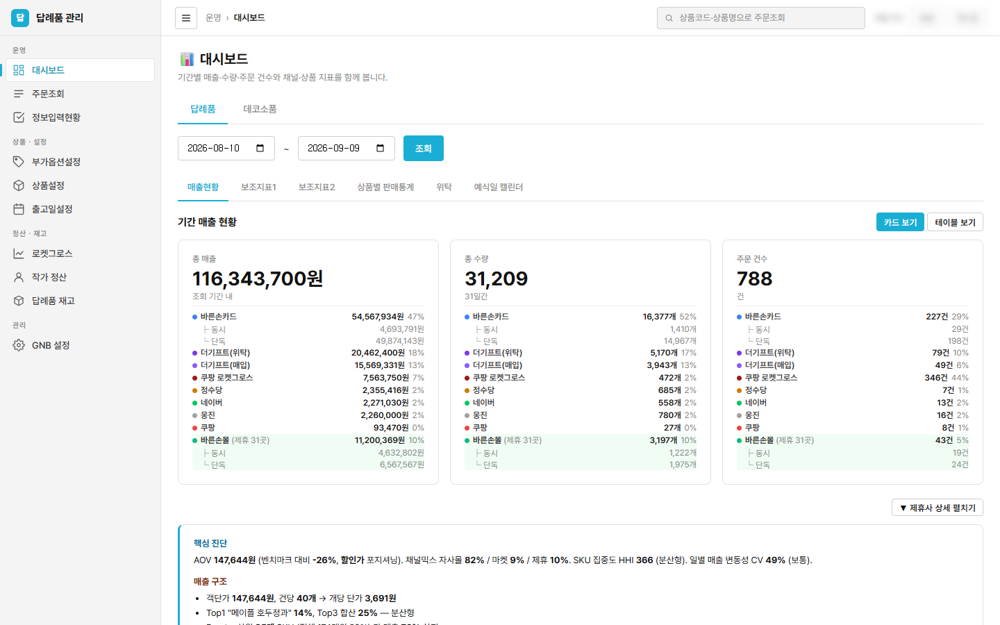
- 총 매출 / 총 수량 / 주문 건수 카드 — 기간 내 전 채널 합산. 카드 아래에 채널별(바른손카드·바른손몰·쿠팡·네이버·정수당 등) 금액이 나뉘어 표시됩니다.
- 위탁답례품은 자사 매출과 합산되지 않고 보라색 별도 라인으로 분리 표시됩니다 (총합에는 포함).
- "제휴사 상세 펼치기"를 누르면 바른손몰 제휴사별 세부 금액이 열립니다.
- 어제 vs 오늘 · 지난주 동기간(WoW) 비교 카드와 희망출고일별 매출이 아래에 이어집니다.
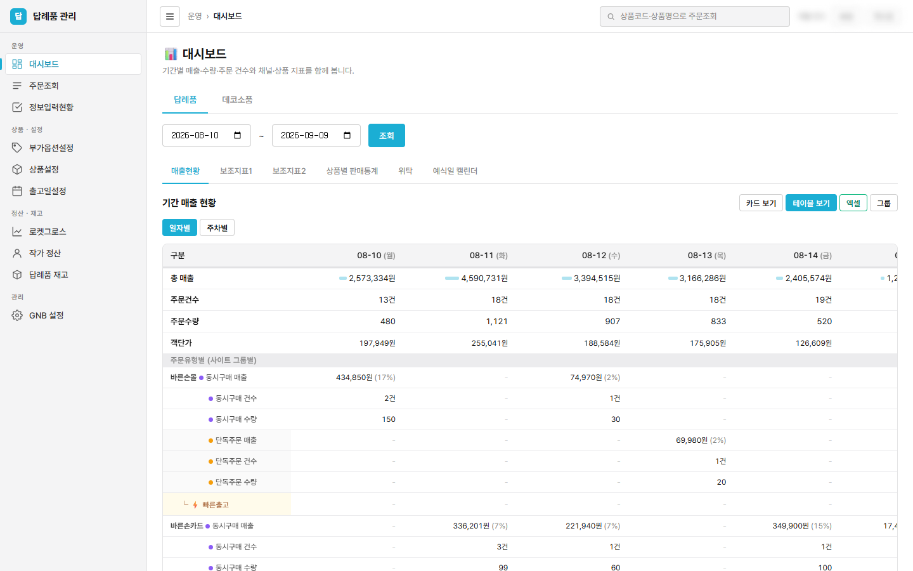
3-2. 보조지표 1·2
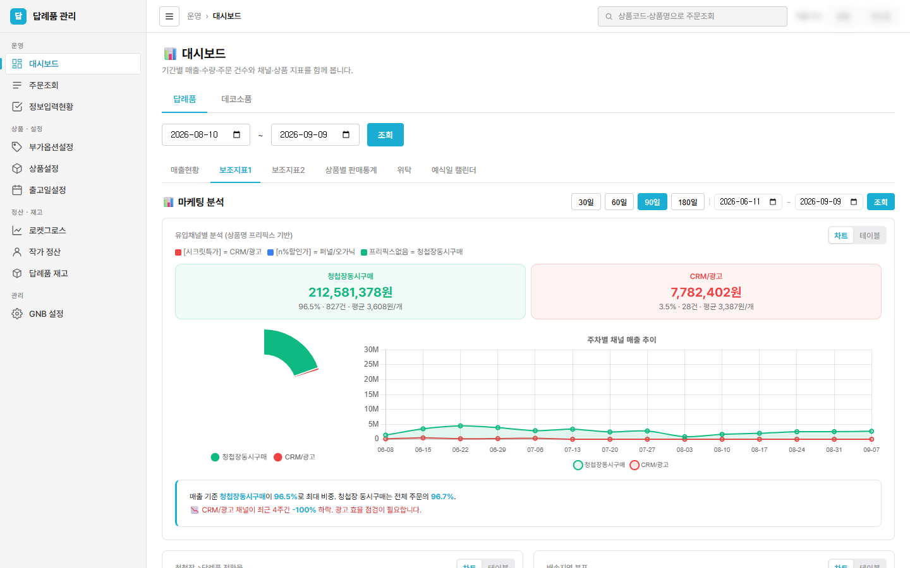
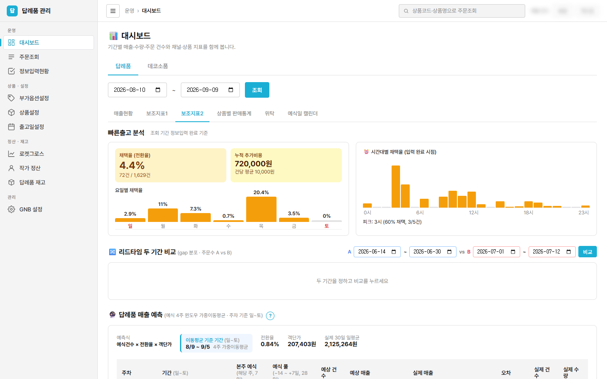
- 매출 예측 — 예식 수 × 전환율 × 객단가 기반 주차별 예측. 2026년 1주차부터 전체 히스토리가 표시되며, "실제 매출"에는 더기프트 수동등록분이 포함됩니다 (예측 계산은 자사 기준).
- 리드타임 — 주문일 → 희망출고일 간격 분석. 인쇄 일정 계획에 활용.
3-3. 상품별 판매통계
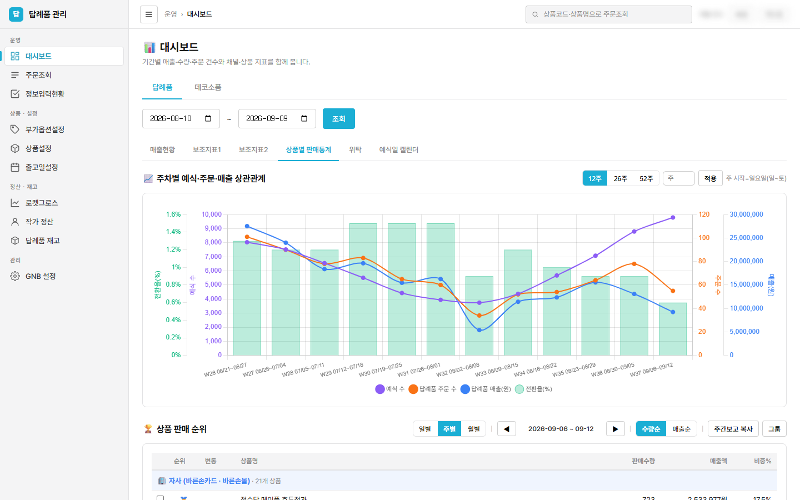
- 📈 주차별 상관관계 — 주차별(일~토) 예식 수·답례품 주문 수·매출 꺾은선 + 전환율 막대. 상단에서 12/26/52주 프리셋 또는 주차 수 직접 입력으로 기간을 바꿉니다. 예식 수는 각 주차의 앞 14일~뒤 7일(28일 윈도우) 예식 합계입니다.
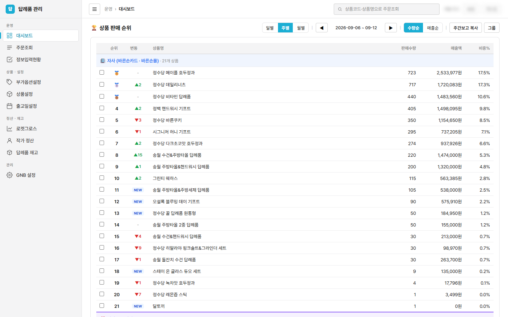
- 🏆 상품 판매 순위 — 일/주/월 단위로 이동하며 상품별 판매수량·매출액·비중을 확인합니다. 변동 컬럼은 직전 기간 대비 순위 등락(▲/▼/NEW)입니다.
- 섹션 구성: 🏢 자사(바른손카드+더기프트) / 🚀 쿠팡 / 🟢 네이버 / 🏬 정수당 — 판매가 없는 채널 섹션은 표시되지 않습니다.
- 행 앞 체크박스 → 🔗 그룹으로 묶기로 같은 상품(채널별 이름이 다른 경우)을 하나로 합칠 수 있습니다 (3-4 참고).
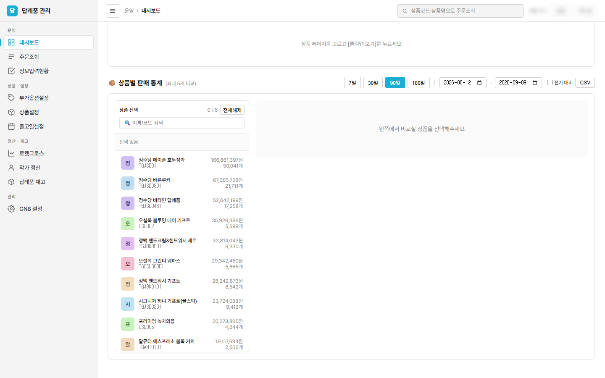
- 상품별 판매 통계 — 좌측 목록에서 상품을 골라(최대 5개) 기간별 매출·수량·주문수·평균 주문가와 일별 추이를 비교합니다. 기간 프리셋(7/30/90/180일)과 전기 대비 옵션 제공.
- 목록은 매출 그룹 단위로 표시됩니다 — 그룹으로 묶인 상품은 자사·쿠팡·네이버·정수당·더기프트 구분 없이 한 줄로 나오고, 선택하면 전 채널 합산으로 집계됩니다.
3-4. 매출 그룹 (상품 묶기) — 핵심 기능
같은 상품인데 채널마다 이름/코드가 달라 여러 줄로 나뉘는 문제를 해결하는 기능입니다. 예: 자사 "메이플 호두정과", 쿠팡 "정수당 메이플 호두정과 답례품 80g(1박스)+감사 스티커…"
- 그룹명이 매출 시트·상품 순위·상품별 통계에서 대표 이름으로 표시되고 수량/매출이 합산됩니다.
- 상품코드/상품명 기준으로 저장되므로 이후 새 매출이 발생해도 그룹이 자동 유지됩니다.
- 이미 다른 그룹에 속한 항목을 다시 묶으면 새 그룹으로 이동합니다 (한 상품 = 한 그룹).
- 그룹을 삭제하면 묶였던 항목들은 다시 개별 표시됩니다 (매출 데이터 자체는 변하지 않음).
3-5. 위탁 대시보드·정산
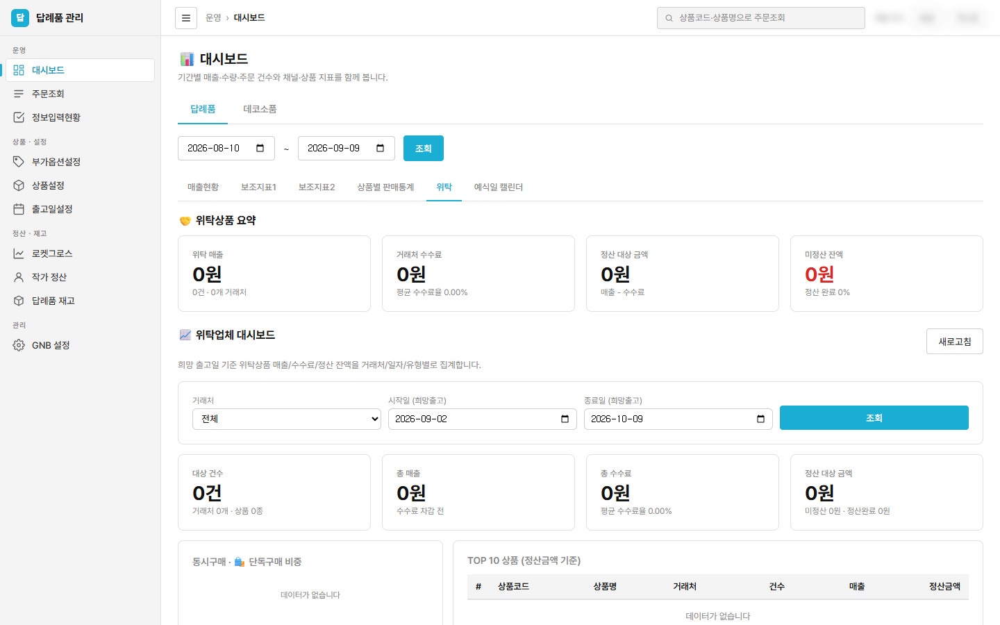
- 위탁답례품(상품코드
COM_)의 매출·수수료·정산액을 희망 출고일 기준으로 집계합니다. - 거래처/기간/정산상태로 필터링하고, 미정산 건은 정산처리 버튼으로 완료 처리합니다 (정산 시점 금액이 저장되어 이후 가격이 바뀌어도 기록 유지).
- 수수료율: 상품별 지정 > 거래처 기본값 순으로 적용.
4. 주문조회
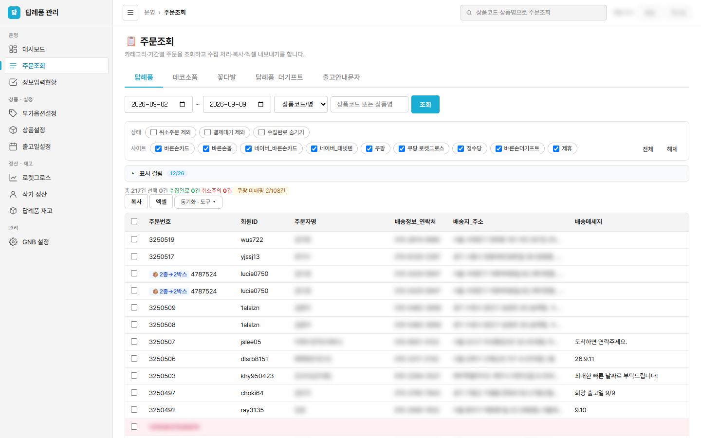
- 카테고리 탭: 답례품 / 데코소품 / 꽃다발 / 🎁 답례품_더기프트
- 주문사이트 필터(답례품 탭): 바른손카드 / 바른손몰 / 쿠팡 / 네이버(바른손카드·테넷텐) / 정수당 등 채널별로 좁혀 봅니다.
- 컬럼 설정: 표에 표시할 컬럼을 체크박스로 선택합니다.
- 수집복사: 선택한 주문을 인쇄팀 전달용 시트 형식(23열)으로 클립보드에 복사합니다. 품목코드·박스컬러·스티커코드(수량)·문구가 포함됩니다.
- 취소 주문은 상태에 따라 표시됩니다 — 채널 재동기화 시 취소 상태도 자동 갱신됩니다.
4-1. 채널 동기화
- 쿠팡/네이버/정수당은 30분 주기로 자동 동기화됩니다 (외부 스케줄러). 급하게 최신 주문을 받아야 하면 상단의 채널별 동기화 버튼을 누르세요.
- 정수당(카페24)은 스티커 품목코드·박스컬러·문구까지 자동으로 들어와 정보입력현황에 "입력완료" 상태로 바로 반영됩니다.
4-2. 더기프트 CSV 업로드
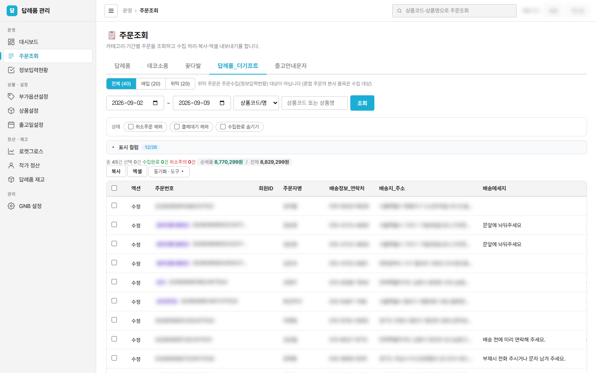
- API 미연동 채널이라 📤 CSV 업로드 버튼으로 주문 파일을 올립니다. 같은 주문번호는 덮어쓰기되어 중복되지 않습니다.
- CSV의 결제일자(R열)가 매출 기준일, 판매금액(Q열)이 상품별 매출로 들어갑니다.
- 추가입력옵션(K열)의 스티커 문구는 정보입력현황 문구 칸으로 자동 매핑됩니다.
- 업로드된 주문은 대시보드 매출·상품별 통계·예측 카드 "실제 매출"에 모두 반영됩니다.
5. 정보입력현황
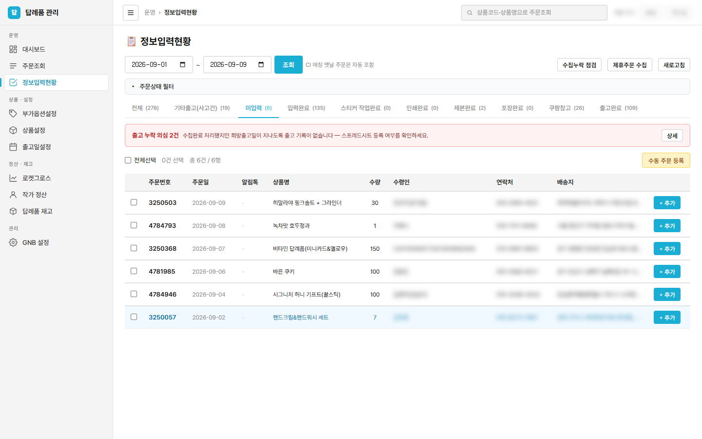
- 모든 채널의 답례품 주문이 모여 스티커 종류·문구·박스·희망출고일을 관리하는 핵심 작업 화면입니다.
- 상태 흐름: 미입력 → 입력완료 → 스티커완료 → 인쇄 → 제본 → 포장 → 출고. 각 단계 버튼으로 진행 처리합니다.
- 문구 컬럼: 고객이 입력한 스티커 문구. 스티커에 상단/하단 필드가 정의된 경우 필드별로, 아니면 통문구로 표시됩니다.
- 빠른출고: 상품명에 "[오늘출발]"이 있으면 자동으로 빠른출고 분류됩니다.
- 편집 버튼으로 스티커 변경·문구 수정·출고일 변경·나눔배송(멀티 그룹) 설정이 가능합니다.
ETC-=바른손몰, CP-=쿠팡, NV-=네이버, CF-=정수당, MO-=더기프트.6. 스티커 관리
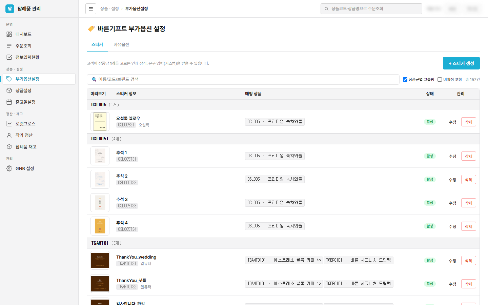
- 스티커 등록: 코드(예:
TGJSD07S2), 이름(예: 클로버), 미리보기 이미지. - 입력 필드(custom fields): "상단문구/하단문구"처럼 고객 입력란을 정의합니다. 정의하면 정보입력 편집 화면에 칸이 나뉘어 표시됩니다.
7. 상품설정
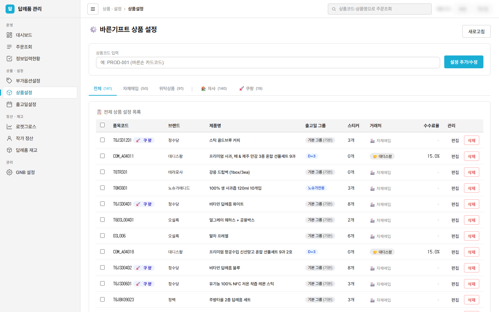
- 상품(품목코드)별로 선택 가능한 스티커 목록과 박스를 매핑합니다.
- 위탁 거래처를 지정하면 해당 상품 매출이 위탁 대시보드·정산에 잡힙니다.
- 대시보드 ERP 코드 매핑: 변형 코드가 다른 상품을 매출 집계에서 묶는 설정 (현재는 3-4의 "매출 그룹" 사용을 권장 — 화면에서 바로 묶을 수 있습니다).
8. 출고일설정
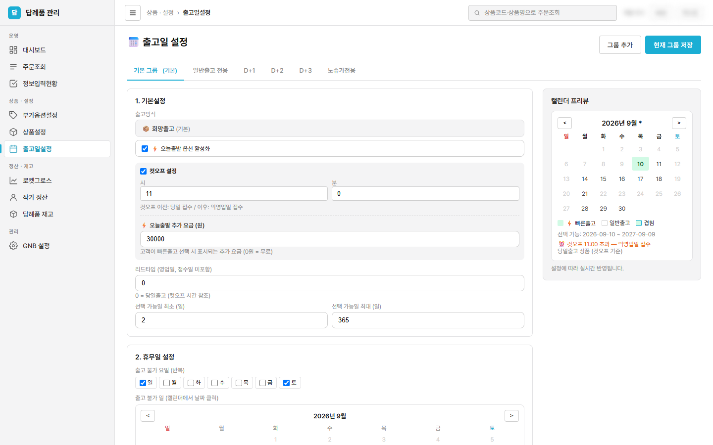
희망출고일 계산 규칙(주문 후 기본 소요일), 휴무일, 빠른출고 조건 등을 설정합니다. 고객 주문 화면과 정보입력현황의 출고일 계산이 이 설정을 따릅니다.
9. 로켓그로스 매출
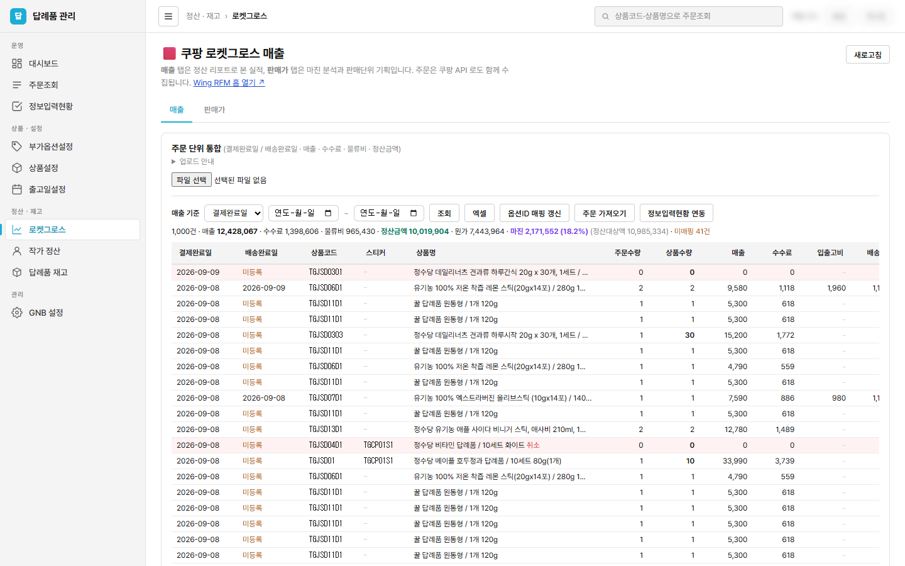
- 매출인식일 × 옵션 단위로 저장되어 상품별 순위·통계에도 반영됩니다.
- '주문 정산취소'는 환불로 자동 분리되고, 같은 파일을 다시 올려도 중복되지 않습니다 (덮어쓰기).
- 업로드한 날짜에 기존 수동 입력 합계가 있으면 자동으로 대체됩니다 (이중 계상 방지).
- 월 정산 확정 후 나오는 리포트라 실시간이 아닌 소급 등록입니다. 정산 전 기간은 아래 수동 입력을 임시로 사용하세요.
10. 위탁업체
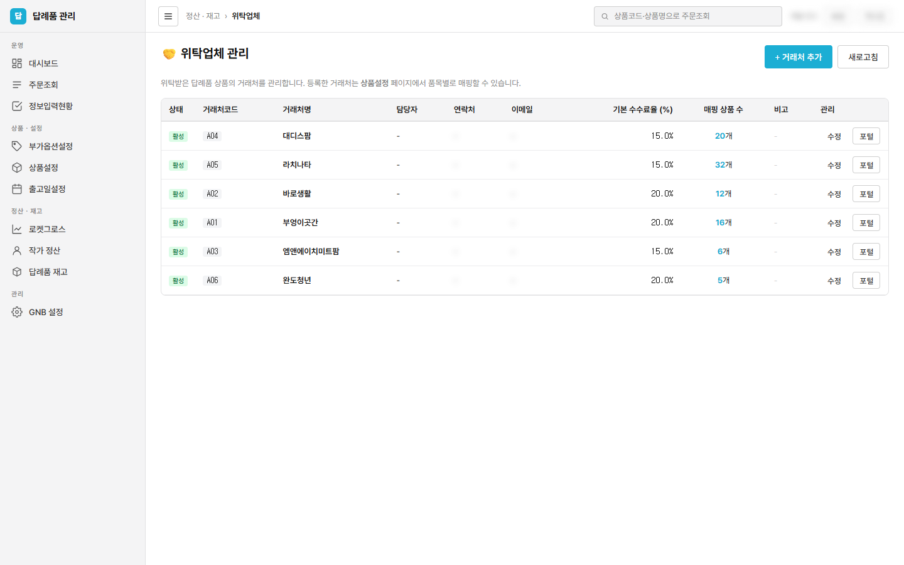
- 위탁 거래처를 등록하고 기본 수수료율을 설정합니다.
- 포털 토큰을 발급하면 거래처가 로그인 없이 자기 주문/정산 현황을 보는 외부 링크를 만들 수 있습니다.
11. 작가 정산
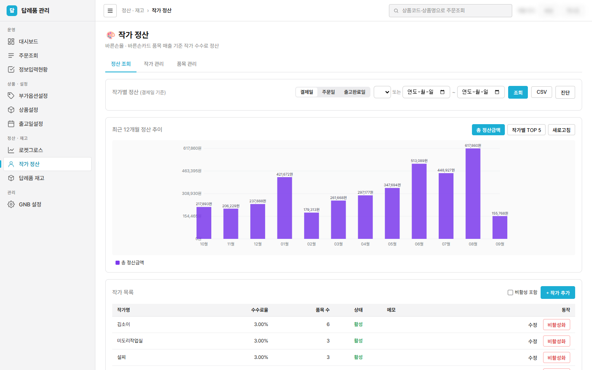
- 작가별 등록 상품의 결제일 기준 매출과 수수료율에 따른 정산액을 집계합니다.
- 쿠폰/포인트 할인은 주문 내 청첩장(A01) 아이템 수 기준으로 균등 분배 차감됩니다.
- 바른손카드·바른손몰(제휴사 코드 구분용) 모두 동일 규칙이 적용됩니다.
12. 기타 페이지
| 페이지 | 용도 |
|---|---|
| 📊 월간 보고서 | 월 단위 매출·주문 요약 리포트 (보고용 화면) |
| 📦 답례품 재고 | ERP 재고 코드 기준 상품별 재고 현황 |
| 💍 예식일 캘린더 | 주차/일자별 예식 건수 캘린더 — 수요 예측 참고 |
| 💡 SNS 인사이트 | 인기 상품·리드타임 기반 SNS 콘텐츠 소재 추천 |
| 📝 일지 | 일별 운영 기록 + 당일 매출 메트릭 스냅샷 |
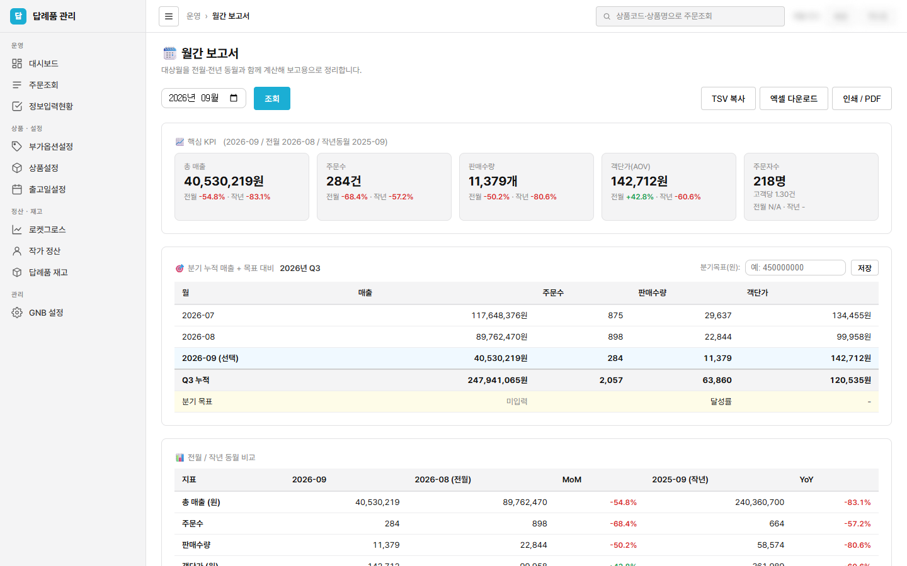
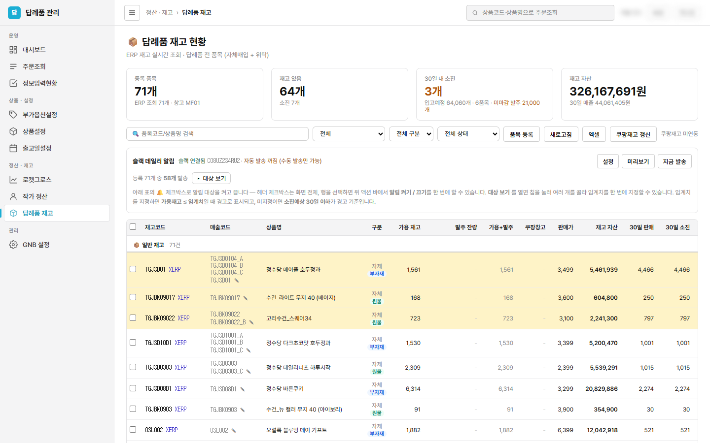
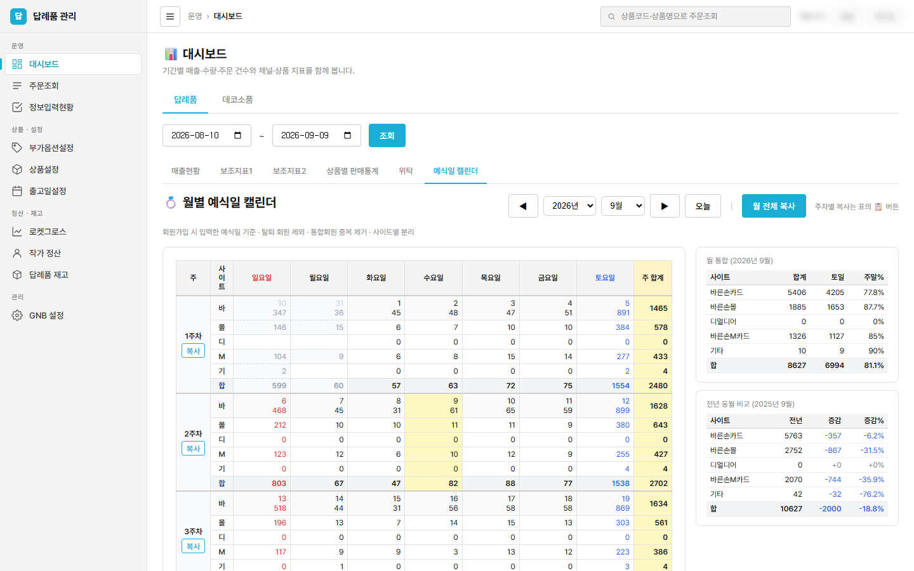
13. 자동화 (동기화 스케줄)
| 작업 | 주기 | 방식 |
|---|---|---|
| 쿠팡 / 네이버 / 정수당 주문 동기화 | 약 30분 간격 | 외부 스케줄러(cron-job.org)가 API 호출 |
| 주문 RAW 시트 동기화 | 매일 03:00 | 서버 내부 스케줄 |
| 화환·청첩장 데일리 리포트 (Slack) | 매일 00:02 | 별도 컨테이너 (사업운영-본부 채널 발송) |
14. 자주 묻는 질문 (FAQ)
Q. 특정 채널 주문이 안 보여요.
① 주문조회에서 해당 채널 동기화 버튼을 눌러보세요. ② 주문사이트 필터가 걸려있는지 확인하세요. ③ 그래도 없으면 채널 관리자(Wing/스마트스토어/카페24)에서 주문 상태를 확인 후 담당자에게 문의하세요.
Q. 스티커 문구가 화면에 안 보여요.
정보입력현황의 편집 버튼을 눌러 상세에서 확인하세요. 문구가 저장돼 있는데 목록에 안 보이면 새로고침 후에도 같은지 확인하고 담당자에게 알려주세요.
Q. 같은 상품이 대시보드에 여러 줄로 나와요.
채널마다 상품명이 달라서입니다. 3-4 매출 그룹으로 묶으면 한 줄로 합산됩니다.
Q. 매출 숫자가 화면마다 조금 달라요.
화면별 기준이 다를 수 있습니다 — 매출현황은 주문일, 위탁 정산은 희망출고일, 작가 정산은 결제일 기준입니다. 또한 로켓그로스는 정산 리포트 업로드 후에만 반영됩니다.
Q. 취소된 주문이 아직 활성으로 보여요.
해당 채널 동기화를 한 번 실행하면 취소 상태가 반영됩니다.
Q. 더기프트 CSV를 두 번 올렸는데 괜찮나요?
네. 같은 주문번호는 덮어쓰기되어 중복 등록되지 않습니다. 로켓그로스 리포트도 동일합니다.
15. 용어집
| 용어 | 의미 |
|---|---|
| WoW / MoM / YoY | 전주 대비 / 전월 대비 / 전년 동월 대비 증감 |
| 동시구매 | 청첩장과 함께 주문된 답례품 (단독주문의 반대) |
| 위탁답례품 | 외부 거래처 상품을 위탁 판매 (상품코드 COM_ 시작, 수수료 정산 대상) |
| 희망출고일 | 고객이 지정한 출고 희망 날짜 — 인쇄/출고 일정과 위탁 정산의 기준 |
| 리드타임 | 주문일부터 희망출고일까지의 간격(일) |
| 빠른출고 | [오늘출발] 상품 등 당일/익일 출고 건 |
| 매출 그룹 | 채널별로 이름·코드가 다른 같은 상품을 하나로 묶는 설정 (3-4) |
| 로켓그로스(RFM) | 쿠팡 판매자로켓 — 주문 단위가 아닌 정산 리포트 기반 매출 채널 |
| 수집복사 | 인쇄팀 전달용 23열 시트 형식으로 주문을 클립보드에 복사하는 기능 |
| 전환율 | 예식 수 대비 답례품 주문 비율 (예식 윈도우 기준) |
문의: 운영 담당자 · 이 매뉴얼은 시스템 업데이트에 따라 갱신됩니다. (최종 갱신 2026-07-29)